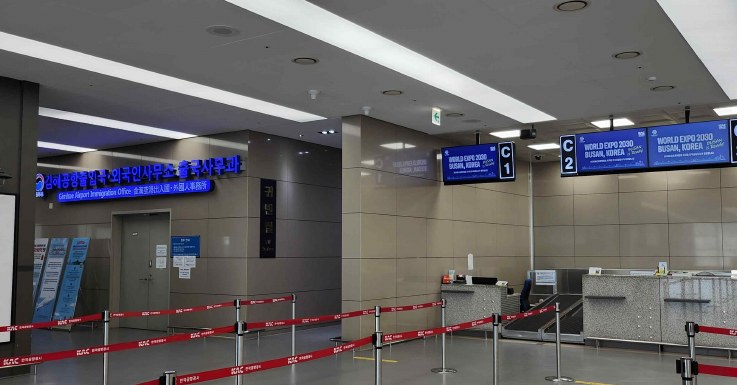

BUSAN, SOUTH KOREA
釜山五日旅程
三人同行 · 地鐵、公車與計程車
抵達釜山倒數
11/28（六）20:05 抵達金海機場 · 韓國時間
行前準備
韓國入境指南
這趟持台灣護照赴韓短期觀光適用。
電子入境卡怎麼填？
台灣短期觀光旅客的 K-ETA 暫免至 2026/12/31。適用暫免且沒有其他免申報資格時，請填電子入境卡。以免簽入境且持有效 K-ETA 者通常免填，可用官方導覽確認。
- 準備護照、可收驗證碼的電子郵件、來回航班、韓國住宿地址與電話。
- 在官方網站選「Individual」免費申報。以韓國時間計算，抵達前 3 天可填，送出後 72 小時失效。這趟建議從 11/26 起填寫並送出，在入境查驗前完成。
- 核對後送出，可截圖留存申報編號備查。
入境要走哪一個通道？
未登錄 SES
首次由金海機場入境，跟著入境標示走外國人人工證照查驗。準備護照與入境卡申報資料，若被問到行程，可出示住宿和回程訂位。通過後領行李、走海關。
已登錄 SES
依現場指示走 자동출입국심사 或 SES 自動通關。掃描護照個資頁，入閘後依螢幕做指紋、臉部辨識，再前往行李提領。辨識失敗時，請工作人員指引人工查驗。
返台時是出境。符合條件、年滿 17 歲的短期外籍旅客可在出境時使用自動查驗，即使未事先登錄 SES。以現場指引為準。
首次申辦 SES · 金海機場
11/28（六）20:05 抵達。 金海登錄處公告為平日 09:00–18:00，12:00–13:00 午休。這次首次入境請先走人工查驗。12/2（三）原訂約 17:15 從南浦出發，想在返台前申辦，請先確認能否在 18:00 前到櫃檯，也可在旅途中洽詢釜山市區登錄處。
資格與申辦步驟
- 年滿 17 歲，持有效台灣晶片護照正本。入境後由本人前往登錄處出示護照，告知要辦 SES。工作人員可能詢問訪韓目的及住宿地點，並審核資格。
- 依指示確認並送出電子申請與資料使用同意，採集兩手食指指紋與臉部影像。
- 核准後確認護照上的 SES 登錄貼紙。資格有效至該本護照到期，換發護照需重新登錄。
去哪裡辦？
金海國際機場國際線航廈 2 樓出境大廳西端，C1 報到櫃檯旁。 在 2 樓報到大廳找藍色「Gimhae Airport Immigration Office」招牌，韓文標示 출국사무과。若動線有調整，請現場人員指引。

金海登錄處 +82 51-979-1300。市區可洽釜山出入境機關綜合民願中心 1 樓 8 號窗口，+82 51-461-3127。去之前可致電確認當日受理。
olive young 快速導航
用 NAVER Map 的定位搜尋附近門市。
行前行李清單
住宿地點
Stay Gaon · 釜山中區中央大路 24 號 7 樓
在 NAVER Map 查看可自訂行程內的住宿地圖搜尋。留空儲存會恢復 Stay Gaon，資料只存於目前的瀏覽器。